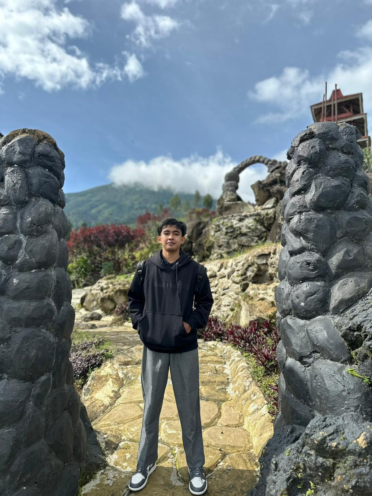

IT Student | Data Science Enthusiast
🏛️ Universitas Muhammadiyah Yogyakarta
🆔 20240140114
📍 Yogyakarta, Indonesia
Dimas adalah seorang mahasiswa Fakultas Teknik Program Studi Teknologi Informasi yang memiliki ketertarikan dalam bidang data science. Sifatnya yang adaptif, komunikatif dan aktif membuatnya mudah bergaul dengan orang lain. Dimas juga memiliki pengalaman dalam mengikuti berbagai kompetisi data science, seperti kompetisi yang diadakan oleh Kaggle. Selain itu, Dimas juga aktif dalam organisasi kampus, seperti Himpunan Mahasiswa Teknik Informatika (HMTI) dan Unit Kegiatan Mahasiswa (UKM) Robotika. Dengan pengalaman dan minatnya dalam bidang data science, Dimas berkomitmen untuk terus mengembangkan keterampilannya dan berkontribusi dalam dunia teknologi informasi.